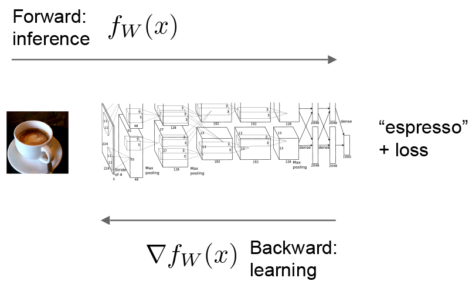
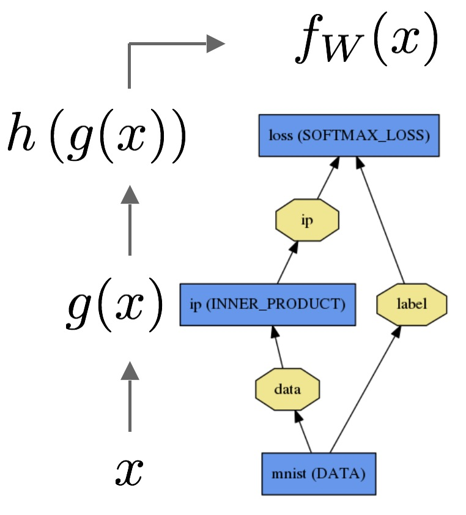
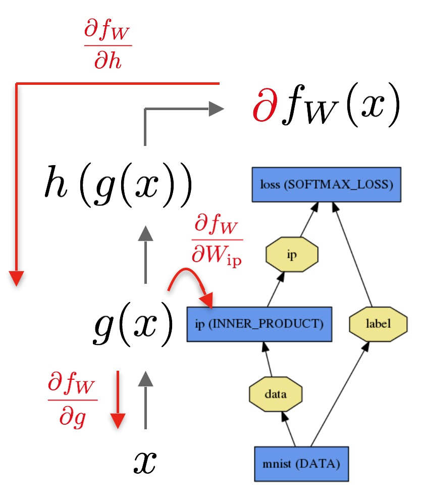

Deep learning framework by the BVLC
Created by
Yangqing Jia
Lead Developer
Evan Shelhamer
The forward and backward passes are the essential computations of a Net.

Let’s consider a simple logistic regression classifier.
The forward pass computes the output given the input for inference. In forward Caffe composes the computation of each layer to compute the “function” represented by the model. This pass goes from bottom to top.

The data is passed through an inner product layer for then through a softmax for and softmax loss to give .
The backward pass computes the gradient given the loss for learning. In backward Caffe reverse-composes the gradient of each layer to compute the gradient of the whole model by automatic differentiation. This is back-propagation. This pass goes from top to bottom.

The backward pass begins with the loss and computes the gradient with respect to the output . The gradient with respect to the rest of the model is computed layer-by-layer through the chain rule. Layers with parameters, like the INNER_PRODUCT layer, compute the gradient with respect to their parameters during the backward step.
These computations follow immediately from defining the model: Caffe plans and carries out the forward and backward passes for you.
Net::Forward() and Net::Backward() methods carry out the respective passes while Layer::Forward() and Layer::Backward() compute each step.forward_{cpu,gpu}() and backward_{cpu,gpu} methods to compute its steps according to the mode of computation. A layer may only implement CPU or GPU mode due to constraints or convenience.The Solver optimizes a model by first calling forward to yield the output and loss, then calling backward to generate the gradient of the model, and then incorporating the gradient into a weight update that attempts to minimize the loss. Division of labor between the Solver, Net, and Layer keep Caffe modular and open to development.
For the details of the forward and backward steps of Caffe’s layer types, refer to the layer catalogue.